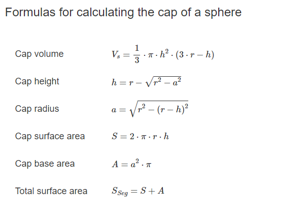

理解立体角之前要先理解圆心角。在二维平面上，一个圆的圆弧的微分记为ds(也叫弧微分)，半径为r，则圆心角指的是弧微分与半径的比值:
\[ d\theta = \frac {ds}{r} \]
对这个式子做0到2π的积分的话，显然右边的分子变成了圆周长2πr，圆心角为\( \frac { 2πr }{r} = 2π \)。
立体角与圆心角非常类似。立体角的ds的含义是球面上的面积微分(下文用dA表示)，而分母需要变成半径r的平方（1球面度所对应的立体角所对应的球面表面积为\(r^{2}\) ）：
\[ d\omega = \frac {dA}{r^{2}} \]
因为球体表面积等于\( 4πr^{2} \)，所以上面的式子积分到整个球体的话，立体角等于4π。
再换个角度分析。在宏观上看，立体角的定义是：
\[ \Omega = \frac {A}{r^{2} } sr \]
其中，sr是单位，叫做球面度；A是这个立体角所对应的球表面积，A被叫做spherical cap(球帽?)。
spherical cap的几何表示如下：

(from wiki)
Spherical-Cap相关公式如下：

spherical cap面积等于\(2\pi rh \)，所以上式可变成：
\[ \Omega = \frac {2\pi rh}{r^{2} } sr \]
当球帽等于半个球时，h等于r，可以得到：
\[ \Omega = \frac {2\pi rr}{r^{2} } sr = 2\pi \ sr \]
此时得到的是半球的立体角。可以知道整个球的立体角为\(4\pi \)，和上述结论一致。
立体角(Solid Angle)转换到球形角(Sphere Angle)
Spherical Coordinates坐标系下的单位球，可用2个弧度变量来定位球面上一个点：\(\theta 和 \phi \)。和三维坐标系的对应关系如下：
\[ x = sin\theta cos\phi \]
\[ y = sin\theta sin\phi \]
\[ z = cos\theta \]
简单验证下。把上面3个式子代入单位球公式:\(x^{2}+y^{2}+z^{2} = 1\)，可得：
\[ (sin\theta cos\phi)^{2} + (sin\theta sin\phi )^{2} + cos^{2}\theta = 1 \]
\[ sin^{2}\theta (cos^{2}\phi + sin^{2}\phi ) + cos^{2}\theta = 1 \]
\[ sin^{2}\theta + cos^{2}\theta = 1 \]
那么，立体角\(\omega \)和\(\theta 、 \phi \)是什么关系呢？先给出答案：
\[ d\omega = sin\theta d\theta d\phi \]
似乎有点莫名其妙，这里我详细解释吧。首先先搞懂\( d\theta 和 d\phi \)的几何意义。
弧度变量的单位是弧度，百度百科给出的1弧度的定义：
弧长等于半径的弧，其所对的圆心角为1弧度。(即两条射线从圆心向圆周射出，形成一个夹角和夹角正对的一段弧。当这段弧长正好等于圆的半径时，两条射线的夹角的弧度为1)。
因此可以知道整个圆的弧度为周长\(2\pi r\)除以半径\(r\)等于\(2\pi \)。
如果已知弧度和半径，就可以求出弧长s，那么上面的\(\theta 、 \phi \)对应的弧长就是：
\[ s_{ \theta } = r_{ \theta }\theta \]
\[ s_{ \phi } = r_{ \phi }\phi \]
微分形式：
\[ ds_{ \theta } = r_{ \theta } d\theta \]
\[ ds_{ \phi } = r_{ \phi } d\phi \]
\( r_{ \theta }、r_{ \phi }\)的值并不是相等的，需要接着分析。
在球坐标系下，\(\theta 、 \phi \)指的是这2个角：

\(\theta\)是\( \vec {op} \)与z轴的夹角；而\(\phi\)是\( \vec {op} \)在xy平面上的投影向量与y轴的夹角。
从图可知，\( r_{ \theta } \)与圆的半径r相等；而\( r_{ \phi } \)是小于等于r的(注意看上面的小圆)，且有：
\[ sin\theta = \frac { r_{ \phi } } {r_{ \theta } }\]
当球是单位球时，球的半径为1，所以有：
\[ r_{ \theta } = 1\]
\[ r_{ \phi } = sin\theta r_{ \theta } = sin\theta \]
又因为在微观下，立体角对应的曲面(或者叫球帽)面积可以当做一个小矩形看，这个小矩形dA的面积等于2个弧长\( ds_{ \theta } \)和\( ds_{ \phi } \)的积：
\[ dA = ds_{ \theta }ds_{ \phi } = r_{ \theta } r_{ \phi }d\theta d\phi = sin\theta d\theta d\phi \]
再因为立体角的微分其实也就是这个小矩形的面积，那么就有：
\[ d\omega = dA = sin\theta d\theta d\phi \]
博主将十分感谢对本文章的任意金额的打赏^_^